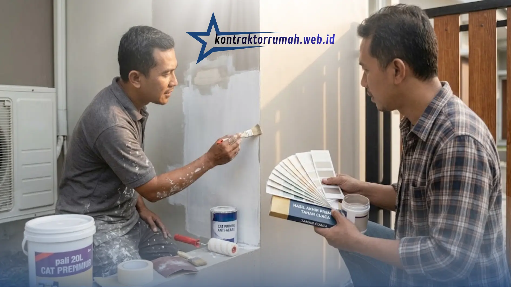

Mengecat ulang rumah adalah cara termudah untuk memberi tampilan baru sekaligus melindungi dinding dari cuaca dan kelembapan. Namun banyak orang kaget karena biaya akhirnya melebihi perkiraan. Penyebabnya biasanya sederhana: estimasi biaya cat rumah dibuat tanpa menghitung luas dinding dan komponen lainnya secara rinci.
Artikel ini membahas faktor yang memengaruhi biaya, cara menghitung kebutuhan cat, contoh perhitungan, dan tips agar anggaran tetap terkendali.
Catatan: Seluruh angka harga dalam artikel ini bersifat ilustrasi dan bisa berbeda menurut kota, merek, toko, dan waktu. Cek harga terbaru di toko bangunan atau minta penawaran dari tukang sebelum memutuskan.
Poin Penting
- Biaya cat dipengaruhi luas area, jenis cat, kondisi dinding, jumlah lapisan, dan upah tukang.
- Standar umum: 1 lapis cat dasar + 2 lapis cat penutup, dengan daya sebar sekitar 8-12 m² per liter.
- Kebutuhan cat (liter) = (luas dinding x jumlah lapis) / daya sebar, ditambah cadangan 10%.
- Contoh ilustrasi dinding 150 m²: sekitar Rp5,4 juta (±Rp36.000 per m² bahan + jasa).
- Siapkan dana cadangan 10-15% dan sepakati rincian pekerjaan secara tertulis.
Faktor yang Memengaruhi Biaya Cat Rumah
1. Luas Area yang Dicat
Semakin luas dinding, semakin banyak cat dan upah yang dibutuhkan. Hitung dinding interior, eksterior, plafon, dan pagar bila ikut dicat.
2. Jenis dan Merek Cat
- Cat ekonomis: harga terjangkau, daya tutup dan ketahanan standar.
- Cat kelas menengah: keseimbangan harga dan kualitas, cocok untuk kebanyakan rumah.
- Cat premium: daya tutup baik, tahan cuaca, dan sering punya fitur tambahan (anti jamur, mudah dibersihkan).
Cat eksterior umumnya lebih mahal daripada interior karena harus tahan hujan dan sinar matahari.
3. Kondisi Dinding
Dinding mulus hanya butuh pengecatan biasa. Dinding retak, mengelupas, berjamur, atau lembap perlu perbaikan terlebih dahulu (plamir, penambalan, anti-alkali sealer, atau waterproofing), sehingga biaya bertambah.
4. Jumlah Lapisan
Standar umum: 1 lapis cat dasar (primer/sealer) + 2 lapis cat penutup. Perubahan dari warna gelap ke terang, atau sebaliknya, bisa memerlukan lapisan tambahan.
5. Ongkos Tukang
Upah biasanya dihitung per meter persegi (m²) atau harian. Tingkat kesulitan (rumah bertingkat, perlu perancah, detail rumit) memengaruhi tarif.
6. Material Pendukung dan Alat
Termasuk plamir, amplas, dempul, lakban kertas (masking tape), plastik pelindung, kuas, roller, dan nampan cat.

Persiapan dinding dan pemilihan jenis cat yang tepat memengaruhi jumlah lapisan sekaligus total biaya pengecatan.
Estimasi Harga Cat dan Jasa (Gambaran Umum)
Berikut kisaran yang umum dijumpai. Gunakan sebagai patokan awal, bukan angka pasti.
| Komponen | Kisaran Perkiraan |
|---|---|
| Cat interior ekonomis (galon 5 liter) | Rp150.000 - Rp250.000 |
| Cat interior/eksterior menengah-premium (pail 20 liter) | Rp600.000 - Rp1.500.000 |
| Cat dasar/sealer (pail 20 liter) | Rp450.000 - Rp900.000 |
| Plamir dinding (per sak 25 kg) | Rp120.000 - Rp200.000 |
| Jasa pengecatan (per m², tenaga saja) | Rp15.000 - Rp35.000 |
| Alat pengecatan (kuas, roller, dll.) | Rp150.000 - Rp300.000 |
Cara Menghitung Kebutuhan Cat
Langkah 1: Hitung Luas Dinding
Rumus dasar luas satu dinding:
Luas dinding = panjang x tinggi
Jumlahkan seluruh dinding, lalu kurangi luas pintu dan jendela (jika tidak ikut dicat). Sebagai gambaran kasar, pintu standar sekitar 2 m² dan jendela sekitar 1-2 m² per unit.
Langkah 2: Tentukan Daya Sebar Cat
Daya sebar (coverage) biasanya tertera di kemasan, umumnya sekitar 8-12 m² per liter per lapis, tergantung merek dan kondisi permukaan.
Langkah 3: Hitung Kebutuhan Cat
Kebutuhan cat (liter) = (luas dinding x jumlah lapis) / daya sebar
Tambahkan cadangan 10% untuk antisipasi tumpahan, permukaan menyerap lebih banyak, atau perbaikan di kemudian hari.
Langkah 4: Hitung Total Biaya
Total biaya = cat penutup + cat dasar + material pendukung + alat + jasa tukang
Contoh Perhitungan Biaya Cat Rumah
Asumsi (ilustrasi):
- Total luas dinding yang dicat (setelah dikurangi pintu dan jendela): 150 m²
- Daya sebar cat: 10 m² per liter per lapis
- Pengecatan: 1 lapis cat dasar + 2 lapis cat penutup
- Tukang hanya jasa (bahan dibeli pemilik rumah)
a. Kebutuhan Cat Penutup
- Luas total pengecatan: 150 m² x 2 lapis = 300 m²
- Kebutuhan: 300 / 10 = 30 liter
- Ditambah cadangan 10%: 33 liter, dibulatkan menjadi 35 liter
- Pembelian: 1 pail 20 liter (Rp650.000) + 3 galon 5 liter (3 x Rp180.000 = Rp540.000)
- Subtotal cat penutup: Rp1.190.000
b. Kebutuhan Cat Dasar
- Kebutuhan: 150 / 10 = 15 liter + 10% = 16,5 liter, dibulatkan 20 liter
- Pembelian: 1 pail 20 liter
- Subtotal cat dasar: Rp550.000
c. Plamir dan Material Pendukung
- Plamir 3 sak x Rp150.000 = Rp450.000
- Subtotal: Rp450.000
d. Alat Pengecatan
- Kuas, roller, nampan, lakban kertas, plastik pelindung
- Subtotal: Rp200.000
e. Jasa Tukang
- 150 m² x Rp20.000 = Rp3.000.000
Rekap Total Estimasi
| Komponen | Biaya |
|---|---|
| Cat penutup | Rp1.190.000 |
| Cat dasar | Rp550.000 |
| Plamir dan material | Rp450.000 |
| Alat pengecatan | Rp200.000 |
| Jasa tukang | Rp3.000.000 |
| Total | Rp5.390.000 |
Dengan asumsi di atas, estimasi biaya cat rumah seluas 150 m² dinding berada di kisaran Rp5,4 juta, atau sekitar Rp36.000 per m² (bahan + jasa). Sebaiknya siapkan dana cadangan 10-15% untuk kebutuhan tak terduga.
Pengecatan Borongan vs Harian
- Borongan (bahan dari pemilik): biaya jelas di awal, cocok bila luas area sudah pasti.
- Borongan (termasuk bahan): praktis, tetapi pastikan merek dan jenis cat disepakati tertulis.
- Harian: fleksibel untuk pekerjaan kecil atau tidak menentu, tetapi total biaya bisa membengkak jika pekerjaan lambat.
Apa pun pilihannya, buat kesepakatan tertulis yang memuat lingkup pekerjaan, jumlah lapisan, merek cat, jadwal, dan metode pembayaran.
Tips Menghemat Biaya Cat Rumah
- Ukur dengan teliti agar tidak membeli cat berlebihan.
- Bandingkan harga di beberapa toko dan minta penawaran dari lebih dari satu tukang.
- Pilih cat sesuai kebutuhan. Tidak semua ruangan perlu cat premium; area eksterior justru layak mendapat kualitas lebih baik.
- Perbaiki dinding dengan benar sebelum mengecat. Menutup retak atau rembes tanpa perbaikan hanya membuang uang karena cat cepat rusak.
- Cat di musim kemarau agar proses pengeringan lebih baik dan hasil lebih awet.
- Beli ukuran kemasan yang efisien. Pail biasanya lebih murah per liter dibanding galon.
- Simpan sisa cat dengan wadah tertutup rapat untuk keperluan perbaikan.
- Kerjakan persiapan sendiri, seperti memindahkan perabot dan menutup lantai, untuk menghemat waktu tukang.
Kesalahan Umum dalam Menghitung Biaya Cat
- Tidak mengurangi luas pintu dan jendela, sehingga cat berlebih.
- Lupa menghitung cat dasar dan plamir.
- Mengabaikan jumlah lapisan yang dibutuhkan.
- Tidak menyediakan cadangan dana.
- Memilih tukang hanya berdasarkan harga termurah tanpa melihat hasil kerja sebelumnya.
Catatan dari tim Kontraktor Rumah: Butuh bantuan menyusun RAB pengecatan atau renovasi? Layanan jasa renovasi bangunan kami siap membantu mulai dari survei dinding, perhitungan kebutuhan material, hingga pengerjaan di lapangan dengan RAB yang transparan.
FAQ Seputar Biaya Cat Rumah
Menyusun estimasi biaya cat rumah yang akurat bergantung pada beberapa hal: luas area, jenis cat, kondisi dinding, jumlah lapisan, dan upah tukang. Dengan menghitung kebutuhan secara bertahap seperti contoh di atas, Anda bisa menyusun anggaran realistis dan menghindari pengeluaran mendadak.
Sebelum memulai, ukur ulang dinding, cek harga terbaru, dan sepakati rincian pekerjaan secara tertulis. Hasilnya: rumah tampil segar dengan anggaran yang tetap terkendali.